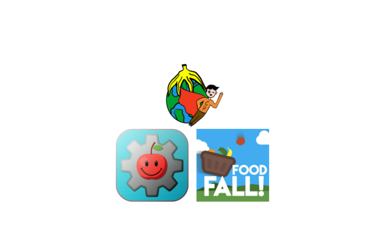

<!-- 
	THIS PAGE WILL NOT BE IN FINAL VERSION 
	RESOURCE.PHP IS UPDATED VERSION
-->

<!DOCTYPE html>
<html lang="en">
	<head>
	<link rel="stylesheet" href="css/masterreset.css">
	<link rel="stylesheet" href="css/template2.css">
	<link rel="stylesheet" href="css/resource.css">
	<script src='js/template.js'></script>
	<script src="https://code.jquery.com/jquery-3.2.1.min.js"></script>
    <script src="js/overlaynav.js"></script>
    <script src="js/resource.js"></script>
	</head>
	</html>
	<body>
		<div id=overlay></div>
		<div id="header">
			<div id='navCont'>
				<div class='navlogo'>
					<a href='index.html'></a>
					<div class='loginstatus'>
						<p>Welcome, Horse</p>
					</div>
					<div id='navburger'>
						
					</div>
				</div> <!--end of navlogo-->
				<div class='navlinks'>
					<ul>
						<a href='index.html'><li class='navbuttonleft'>Home</li></a>
						<a href='resource.html'><li class='navbuttonleft'>Resources</li></a>
						<a href='login.html'><li class='navbuttonright'>Login/Register</li></a>
						<a href='profile.html'><li class='navbuttonright'>Profile</li></a>
						<a href='leaderboard.html'><li class='navbuttonleft'>Leaderboard</li></a>
					</ul>
				</div><!--end ov navlinks-->

	            <div id="mobilenav">
	                <ul>
	                <a href='index.html'><li class='mobilelist'><div>Home</div></li></a>
					<a href='resource.html'><li class='mobilelist'><div>Resources</div></li></a>
					<a href='login.html'><li class='mobilelist'><div>Login/Register</div></li></a>
					<a href='profile.html'><li class='mobilelist'><div>Profile</div></li></a>
					<a href='leaderboard.html'><li class='mobilelist'><div>Leaderboard</div></li></a>
	                </ul>
	            </div><!--end of mobilenav-->

			</div>
		</div>	
		<div id='content'>
			<div class='contentactual'>
				<div class='contentwrapper'> <!--whole wrapper for the boxes-->
					<!--throw your tips n stuffs in expandedcontetnbox below-->
					<div class='expandedcontentbox'>
						<h1>Battleship Haruna</h1>
						<p>
						Haruna, named after Mount Haruna, was a warship of the Imperial Japanese Navy during World War I and World War II. Designed by the British naval engineer George Thurston, she was the fourth and last battlecruiser of the Kongō class, amongst the most heavily armed ships in any navy when built. Laid down in 1912 at the Kawasaki Shipyards in Kobe, Haruna was formally commissioned in 1915 on the same day as her sister ship, Kirishima. Haruna patrolled off the Chinese coast during World War I. During gunnery drills in 1920, an explosion destroyed one of her guns, damaged the gun turret, and killed seven men. During her career, Haruna underwent two major reconstructions. Beginning in 1926, the Imperial Japanese Navy rebuilt her as a battleship, strengthening her armor and improving her speed and power capabilities. In 1933, her superstructure was completely rebuilt, her speed was increased, and she was equipped with launch catapults for floatplanes. Now fast enough to accompany Japan's growing carrier fleet, Haruna was reclassified as a fast battleship. During the Second Sino-Japanese War, Haruna transported Imperial Japanese Army troops to mainland China before being redeployed to the Third Battleship Division in 1941. On the eve of the Japanese attack on Pearl Harbor, she sailed as part of the Southern Force in preparation for the Battle of Singapore.
						</p><br>
						<p>
						Haruna fought in almost every major naval action of the Pacific Theater during World War II. She covered the Japanese landings in Malaya (in present-day Malaysia) and the Dutch East Indies (now Indonesia) in 1942 before engaging American forces at the Battle of Midway and during the Guadalcanal Campaign. Throughout 1943, Haruna primarily remained at Truk Lagoon (Micronesia), Kure Naval Base (near Hiroshima), Sasebo Naval Base (near Nagasaki), and the Lingga Islands (in present-day Indonesia), and deployed on several occasions in response to American carrier airstrikes on Japanese island bases. Haruna participated in the Battle of the Philippine Sea and the Battle of Leyte Gulf in 1944, engaging American vessels in the latter. In 1945, Haruna was transferred to Kure Naval Base, where she was sunk by aircraft of Task Force 38 on 28 July 1945.
						</p>
						
						<h2>Design and Construction</h2>
						<p>
						Haruna was the fourth and last of the Imperial Japanese Navy's Kongō-class battlecruisers, a line of capital ships designed by the British naval engineer George Thurston.[3] The class was ordered in 1910 in the Japanese Emergency Naval Expansion Bill after the commissioning of HMS Invincible in 1908.[5] The four battlecruisers of the Kongo-class were designed to match the naval capabilities of the other major powers at the time; they have been called the battlecruiser versions of the British (formerly Turkish) battleship HMS Erin.[1][2] Their heavy armament and armor protection (which contributed 23.3 percent of their displacement) were greatly superior to those of any other Japanese capital ship afloat at the time.[1][2]
						</p>
						<p>
						The keel of Haruna was laid down at Kobe by Kawasaki on 16 March 1912, with most of the parts used in her construction manufactured in Japan.[2] Due to a shortage of available slipways, Haruna and her sister ship Kirishima were the first two capital ships of the Imperial Japanese Navy to be built in private shipyards.[2] Launched on 14 December 1913, Haruna's fitting-out began in early 1914.[1] She was completed on 19 April 1915.[2]
						</p>
						<h2>Armament</h2>
						<p>
						Haruna's main battery consisted of eight 14 in (36 cm) heavy-caliber main guns in four twin turrets (two forward, two aft).[3] The turrets were noted by the U.S. Office of Naval Intelligence to be "similar to the British 15-inch turrets",[6] with improvements made in flash-tightness. Each of her main guns could fire high-explosive or armor-piercing shells a maximum of 38,770 yd (19.14 nmi; 35.45 km) at a firing rate of two shells per minute.[7] In keeping with the Japanese doctrine of deploying more powerful vessels before their opponents, Haruna and her sister ships were the first vessels in the world equipped with 14 in (36 cm) guns.[8] The main guns carried ammunition for 90 salvoes, and had an approximate barrel life of 250 to 280 rounds.[6] In 1941, separate dyes (used to distinguish between shells fired from multiple ships) were introduced for the armor-piercing shells of the four Kongo-class battleships, with Haruna's armor-piercing shells using black dye.[6]
						</p>
						<p>
						Her secondary battery was originally sixteen 6 in (15 cm) 50-caliber medium guns in single casemates (all located amidships),[1] eight 3 in (7.6 cm) guns and eight submerged 21 in (53 cm) torpedo tubes.[3] The six-inch guns could fire five to six rounds per minute, with a barrel life of 500 rounds.[9] The 6"/50 caliber gun was capable of firing both anti-aircraft and anti-ship shells, though the positioning of the guns on Haruna made antiaircraft firing impractical.[1] During her second reconstruction, the older 3-inch guns were removed and replaced with eight 5 in (13 cm) dual-purpose guns. These 5"/40 caliber guns could fire between 8 and 14 rounds per minute, with a barrel life of 800 to 1,500 rounds.[10] The 5"/40 had the widest variety of shot types of Haruna's guns, being designed to fire antiaircraft, antiship, and illumination shells.[10] She was also armed with a large number of 1 in (2.5 cm) antiaircraft machine guns. In 1943, her secondary armament was reconfigured to eight 6 in (15 cm) guns, twelve 5 in (13 cm) guns, and finally by the end of 1944 one hundred and eight Type 96 antiaircraft autocannon in 30 triples and 18 single mounts.[4]
						</p>
						
						<h2></h2>
						<p>
						</p>
					</div>
					<div class='expandedcontentbox'> <!-- How to tell if food has gone bad -->
						<h1>Has your food gone bad?</h1><br>
						<ol>
							<li>Do the best before dates found on food packaging tell you when it’s unsafe to eat the food?<br>
							<ul>
								<li><button type="button">Yes</button></li>
								<li><button type="button">No</button></li>
								<li><button type="button">Depends on the food</button></li>
							</ul></li><br>
							<li>Which of these foods have gone bad if you’ve found mold on them?<br>
							<ul>
								<li><button type="button">Meat &amp; Dairy</button></li>
								<li><button type="button">Bread</button></li>
								<li><button type="button">Fruits &amp; Vegetables</button></li>
								<li><button type="button">All of them</button></li>
							</ul></li><br>
							<li>How safe is it to eat an apple that’s very soft on the inside?<br>
							<ul>
								<li><button type="button">It's safe</button></li>
								<li><button type="button">It depends</button></li>
								<li><button type="button">It's not safe</button></li>
							</ul></li><br>
							<li>Is a coating of slime on meat a sign of bad food?<br>
							<ul>
								<li><button type="button">Yes</button></li>
								<li><button type="button">No</button></li>
							</ul></li><br>
							<li>Are fruits and vegetables with slightly odd coloring safe to eat?<br>
							<ul>
								<li><button type="button">Yes</button></li>
								<li><button type="button">No</button></li>
								<li><button type="button">Only fruits are</button></li>
								<li><button type="button">Only vegetables are</button></li>
							</ul></li><br>
							<li>When you put an egg in water and it’s unsafe to eat, what happens to the egg?<br>
							<ul>
								<li><button type="button">It sinks</button></li>
								<li><button type="button">It floats</button></li>
								<li><button type="button">It stays in the middle</button></li>
							</ul></li><br>
							<li>Is a food still safe if it smells weird?<br>
							<ul>
								<li><button type="button">Yes</button></li>
								<li><button type="button">No</button></li>
								<li><button type="button">Only if it looks weird too</button></li>
							</ul></li><br>
							<li>If green vegetables have turned yellow are they safe to eat?<br>
							<ul>
								<li><button type="button">Yes</button></li>
								<li><button type="button">No</button></li>
							</ul></li><br>
							<li>Are bruised fruits and vegetables safe to eat?<br>
							<ul>
								<li><button type="button">Yes</button></li>
								<li><button type="button">No</button></li>
								<li><button type="button">As long as you remove the bruised portion</button></li>
								<li><button type="button">Only in small amounts</button></li>
							</ul></li><br>
							<li>Is lettuce with brown discoloration safe to eat?<br>
							<ul>
								<li><button type="button">Yes</button></li>
								<li><button type="button">No</button></li>
							</ul></li><br>
						</ol>
					</div>
					<div class='expandedcontentbox'>
						<h1>TOPIC3</h1>
					</div>
					<div class='expandedcontentbox'>
						<h1>TOPIC4</h1>
					</div>
				<!-- UNCOMMENT THIS WHEN WE CAN FINALLY EXPAND THE AFFILIATED APPS BOX
					<div class='bigexpandedcontentbox'>
						<h1>AFFILIATED APPS</h1>
						<p>
						Here are some other apps that we have connection with!
						</p>
						<br>
                        <hr>
						<h2>Food Factory Zero</h2>
						<br>
						
                        <br><br>
                        <p>Food Factory Zero is a time-based drag and drop game. All you need to do is pick and match the ingredients with recipes.</p>
						<br>
                        <p>Link: <a href='http://students.bcitdev.com/A01006039/ffz/'>http://students.bcitdev.com/A01006039/ffz/</a></p>
                        <br>
                        <hr>
						<h2>Captin Plan-It</h2>
						<br>
						
						<br><br>
                        <p>Captain Plan-It is an educational quiz game where you can answer questions related to food groups. Answer correctly to earn keys which can unlock accessories for your own personal hero!
						<br><br>
                        <hr>
                        <h2>Food Fall</h2>
                        <br>
						
						<br><br>
                        <p>Food Fall is a game that teaches you the effects of food waste - and to have fun too!</p>
                        <br>
                        <hr>
						<h2>FoodTrivia</h2>
                        <br>
                        
                        <p>FoodTrivia teaches you about food waste and strategies on how to reduce avoidable food waste.</p>
                        <br>
				    -->	
					<!--start of the topic box-->
					<div class='contentboxwrapper'>
						<div class='contentbox'>
							<h1>TOPIC1</h1>
						</div>
					</div>
					<div class='contentboxwrapper'>
						<div class='contentbox'>
							<h1>Has your food gone bad?</h1>
						</div>
					</div>
					<div class='contentboxwrapper'>
						<div class='contentbox'>
							<h1>TOPIC3</h1>
						</div>
					</div>
					<div class='contentboxwrapper'>
						<div class='contentbox'>
							<h1>TOPIC4</h1>
						</div>
					</div>
					<div class='bigcontentboxwrapper'>
						<div class='bigcontentbox'>
							<h1>AFFILIATED APPS</h1>
							<br>
							
						</div>
					</div>
				</div>
			</div>
		</div>
		<div id='footer'>
			<div class='footercontent'>
				<p>Copyright whatever</p>
			</div>
		</div>

	</body>

</html>